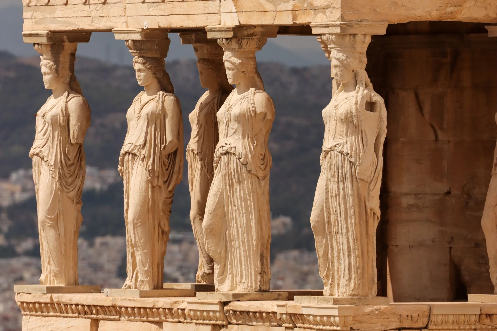

Exhibitions
Planning an exhibition? The gallery can help you develop your project.
Every sculpture has more to reveal up close.

Paul Dechewsky has worked in the art world for over thirty years. The MOMOA gallery continues this work with a collection devoted to Greek sculpture and its legacy.
Paul Dechewsky, gallery manager
MOMOA is a fictional gallery created as part of a university project.
Planning an exhibition? The gallery can help you develop your project.

Guided presentations explore the history of the works and the details to look for.
Paris · Fictional gallery
Read the frequently asked questionsFollow the exhibitions and featured works.
Sign upIn MOMOA’s fictional gallery, an exhibition could begin with a question. How does a still sculpture suggest movement? The Winged Victory of Samothrace appears to alight on a ship’s prow, while the Discobolus pauses before the throw. Place the two photographs side by side and look at where your eye goes first. The lifted folds suggest movement, while the athlete’s sweeping arm leads the eye across the figure.
Start with the outline of a sculpture and notice how the figure is posed. Choose one detail to follow, such as the athlete’s arm or a fold in the drapery, then return to the whole image. Ask how that detail changes your sense of the pose. With Athena, look for the helmet in the full figure. A closer look at the Gorgon’s head on the aegis provides another clue. The artwork notice explains how those features help identify her.
A collection devoted to Greek sculpture and its legacy brings together works from different periods. The Discobolus notice identifies the surviving work as a Roman marble copy of a lost Greek bronze. The Prometheus notice describes a nineteenth-century marble group by Eduard Müller inspired by Greek myth. When comparing two notices, look for the date, material and subject of each work. The date helps you place the sculpture in time, and the subject tells you what story or figure it depicts.
The way a photograph is framed draws attention to some details and leaves others out of view. Use the collection to compare the overall shapes, then open a notice to find the source and photo credit. With the Venus de Milo, start with the visible drapery and then read the passage about the missing arms. This makes it easier to see which details the sculpture still offers and why the goddess’s identity remains uncertain.